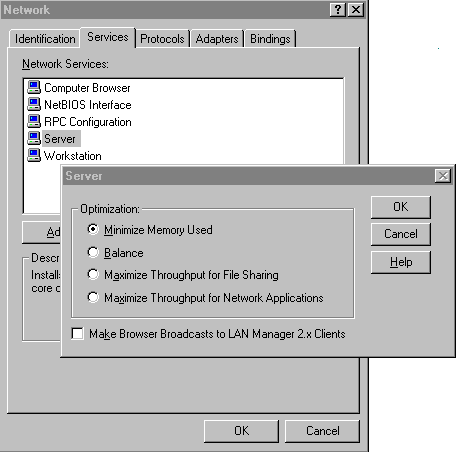

|
| ||
|
| ||
Starr Anderson/Amir Majidimehr
Microsoft Corporation
February 18, 1999
Contents
Introduction
Knowing the Components of the Streaming System
Designing a Streaming System
The Encoder
The Encoding Process
The Server
The Server Process
The Client
Improving Video Content Quality
In Summary
Streaming high bit rate and frame rate video content using Windows Media Technologies (WMT) requires you to pay particular attention to the processing power and configuration of the platforms that make up your streaming system, as well as the quality of the source content. Although the process is similar to streaming low bit rate and frame rate content, generally, there are two distinctions that affect streaming video content at high bit rates and frame rates:
Video streaming at high bit rates and frame rates results in much higher quality sound and video content. But, before you begin producing high bit rate and frame rate video, you must understand the components of your system and your system's required capabilities.
When transmitting live content, the video and audio content are encoded and sent directly to the server. The server then sends the content to one or more clients. If the encoder is not fast enough to keep up with the incoming data, some of the video frames are lost.
Alternatively, the encoder can be used in "offline" mode. Here, the process differs as it compresses data that has first been captured as an .avi file. The .avi file can be encoded into an .asf file that can then be stored on the server and transmitted later. In this case, the encoder performance is not critical as it can never "fall behind."
To ensure that you receive the highest quality results with your streams, you must design your streaming system properly for high bit rate and frame rate content. Encoding, decoding, and serving the content puts a heavy burden on the components of the entire system.
This burden is not spread uniformly across the system, but rather it is mostly on the encoding platform. This is followed by the client computer, which decompresses and displays a lot more data. The least impact occurs to the server platform, although this too can be stressed if used to serve a large number of on-demand streams at high bit and frame rates.
The load that the encoder places on the CPU varies depending on the type of source material. If you are compressing previously captured data, such as an .avi file, then the power of the system is not as critical as when you encode live data. However, if you plan to encode live video, then it is critical that you use a system that can keep up with the high frame and/or bit rate. Fast-moving images require considerably more processing power than do simple talking heads.
The following configuration has been tested to perform well at bit rates exceeding 3.5 Mbps at full 30 fps:
Note To test your CPU usage, run the encoder with high motion sequences. If the frame rate stays consistent, then the system is fast enough for the task. A telltale sign of a slow system is when it maintains the target frame rate while the image is static and loses a large number of frames while there is fast motion.
Standard CPU monitoring tools, such as Microsoft® Performance Monitor, cannot precisely measure the CPU load of the encoder because they are not able to show the instantaneous CPU peaks that last just a few milliseconds. When there is high motion in the video, the CPU load can exceed what is available for just one frame time (33 milliseconds at 30 fps), which causes a frame of video to be lost. Such peaks are impossible to observe with a performance monitor that shows average CPU usage over time.
Audio Capture Card - While the efficiency of the audio capture card is not an issue (both ISA- and PCI-based devices perform well), the quality of the components in this subsystem make a huge difference in the final results. Inexpensive audio devices tend to produce poor audio/video synchronization — especially over long intervals. They also tend to produce poor results at certain sampling rates. Low-cost audio devices built into today's motherboards also tend to produce poor results. We highly recommend that you invest in a higher-end consumer (for example, SoundBlaster AWE64 Gold or SB Live!) or professional devices (such as Antex Studio Card).
Memory - While most people are tempted to add more memory to such high-end systems, this does not help the encoding process that is basically CPU-bound. Therefore, unless you are planning to use your encoding platform for other functions (such as video editing), we do not recommend that you buy more than 128 MB of memory.
Microsoft Windows NT - If you are planning to use Microsoft® Windows NT® Server instead of Windows NT Workstation, we highly recommend that you change the system setting to reduce the amount of memory that is used for caching files. Otherwise, Window NT Server attempts to expand the file cache at the expense of Windows Media Encoder. The result is that the encoder gets "paged out" and it falls behind when capturing data from the audio device. The settings for this preference can be found by clicking (start > settings > control panel > network > services).

Encoding high bit rate content is not much different from encoding at lower data rates. The only task involved is creating and/or using a custom template to instruct the encoder to compress the source at 30 (or 24 in case of film) fps, and setting the bit rate for audio and video. Instead of creating your own template, you can start by downloading one of the templates. You can modify these templates to fit your needs through the property page. The following list shows the high frame rate and high bandwidth templates:
You can modify these templates to fit your needs through the property page. The following list shows the high frame rate and high bandwidth templates:
Note Avoid selecting too high a data rate for the audio portion of your stream because it increases both the encoding and decoding processing requirements of the system. An audio data rate that is set too high causes audio and video synchronization problems. To change the audio data rate of a custom configuration, stop encoding and open the property sheet of the configuration. On the compression tab, change the audio rate to a lower setting, and then restart the encoding process. Save your new configuration settings to a new .asd encoder configuration file.
The configuration requirement for the server platform differs depending on whether the content is being streamed live or on demand. Specifically, if the server platform is streaming on-demand content, you must plan on having a high-performance disk subsystem. When streaming live content, the performance of the disk subsystem is not a factor. Also note that a single server can stream out about 50 to 70 Mbps (over a 100-megabit network card). If you must go beyond this limit, you must use a cluster of servers with some type of load balancing software. The following configuration has been tested and found to work well when streaming on-demand high bit rate and frame rate content:
From the server point of view, there is no difference in serving low or high data rate content. From a performance perspective, however, serving a few high bit rate clips requires fewer CPU cycles than serving hundreds of lower data rate ones. As such, high bit rate content usually looks better.
Microsoft® Windows® Media Services has a number of performance counters that you can track in Microsoft Performance Monitor. If you are serving on-demand content, pay particular attention to the value of each of the following performance counters:
The Late Reads counter increments the number of late read completions per second. A late read is a disk read operation that takes significantly longer than expected to be completed. Optimally, this counter maintains a zero value. This value is greater than zero when the server is under a very heavy load. If this value is often greater than zero, the system probably is not properly configured or other applications are competing with Windows Media server components for use of the disk. When this counter shows a non-zero value, it indicates the disk subsystem is falling behind and the quality of your content streams can suffer.
The Pending Connections counter shows the number of clients that are attempting to connect to the server but have not yet connected. This value can be high if the server is running near maximum capacity and cannot process a large number of connection requests in a timely manner.
The Stream Errors counter shows the number of errors that occur per second. Stream errors represent the number of stream data packets discarded by the server. They are introduced by the server when it cannot keep up with the demand for data, and must discard some packets to avoid running behind schedule indefinitely. Stream errors show up most often after late reads occur. They indicate that the system is not configured properly or that other applications are competing for system resources. Heavy network traffic can also contribute to stream errors.
The Stream Terminations counter shows the rate at which streams are terminated due to errors. Stream terminations indicate that the system is not configured properly or that the file being streamed is corrupted. The server unilaterally terminates a stream under certain circumstances — usually, when the server is running significantly behind schedule. If the server must discard several packets in a sequence from a given stream to remain on schedule, it terminates the stream. Streams also can be terminated if invalid data is encountered during file streaming.
The UDP Resend Requests counter displays the number of times clients request that the server running Windows Media Services resend data packets that were not received prior. This value can be high when the server cannot reliably send packets via UDP. This counter indicates server or network overload.
The UDP Resends Sent counter reflects the number of UDP resend requests processed by the Windows Media server. Not all UDP resend requests are processed if the server is under a heavy load, so a disparity between the number of resend requests and the number of resends sent indicates that your server is not powerful enough.
Note The performance counters described are optional counters for the Windows Media Services server, so you must add them to the Performance Monitor in order to track these statistics. To do this, on the Windows Media Services server, select Windows Media Performance Counters from the Windows Media Services program group. To view these counters, select Add to Chart from the Edit menu in Performance Monitor, and select Windows Media Unicast Services as the object.
Once the performance of a single CPU server (about 30 Mbps to 50 Mbps) is exceeded, we recommend that you use a cluster of computers and load-balancing software. Microsoft® Windows NT® Load Balancing Service (WLBS) allows clustering of TCP/IP-based network services across up to 32 computers, which then appear as a single logical TCP/IP address space. WLBS complements Microsoft® Cluster Service (MSCS), which is also part of Microsoft® Windows NT® Server, Enterprise Edition. Download this component here. You can also use a multiprocessor system to increase your throughput, although this creates a single point of failure and is not as reliable as a clustered system.
The requirements for the client computer vary depending on the bit rate, video frame size, and frame rate. The most important requirement is a high-performance graphics card followed closely by a high-performance CPU. To determine if a client is fast enough to decode your content, start playing your content, and then look at Frames skipped and Packets lost in the Statistics window. If the value shown there is greater than zero, the client cannot decode all of the frames of video in time to display them. The following list shows the minimum client configuration for data rates up to 250 Kbps:
For a client computer that supports the highest data rates, use the following specifications:
In addition to ensuring your system is adequate enough to produce high bit and frame rate video content, you must be careful during the production process so that your content is recorded and compressed without flaws. It is a common misconception that compression masks flaws in the original material. Actually, the opposite is true. The compression process magnifies any visual artifacts or noise contained in the original video. This results in images that look considerably worse than if you had started with clean sources.
The most important consideration for creating good high (or low bit rate) content is starting with clean, low-noise sources.
We highly recommend that you start with broadcast-quality tape formats such as BetaSP or Digital Betacam. If such formats are not available, consumer DV format can also be used. If you have to use lower-grade consumer formats, such as VHS or Hi8, consider investing in an industrial playback deck that has a TimeBase Corrector (TBC). These machines tend to have a better signal-to-noise ratio, and the TBC helps to produce more stable pictures. Lowering the noise and picture jitter is key to producing compressed video whose quality belies its low data rate. You must keep your signal transfer path as clean as possible. Using a Y/C (commonly known as S-Video) connection will result in a much cleaner signal than using the composite RCA jacks. If you do not have the budget or expertise to set up a high-quality source system, you can use an outside service specializing in such work.
Unless you are encoding at data rates exceeding 1 Mbps, you must control the amount of motion in the source as much as possible. At lower bit rates, high-motion sequences (picture pans or zooms) result in pixelation artifacts that can distract users.
Good lighting practices also contribute to cleaner recordings and better compression.
If at all possible, use broadcast quality material for your content. Pictures shot on film and then converted to video (for example, movies and many broadcast commercials) have additional frames introduced into them that cause motion artifacts when they are played back on non-interlaced computer monitors at 30 fps. If your material is film-oriented, use a professional editing application to remove the redundant frames of video by converting it back to 24 fps. This procedure, which is known as inverse telecine or 3:2 pull down, not only eliminates the motion artifacts, but reduces the total amount of power required to encode content and display it on the client.
Using Windows Media Technologies requires you to set priorities based on the functions and capabilities of the encoder, server, and client. The first priority is ensuring that your encoding platform is capable of encoding content at high bit rates and frame rates. The second is that once the content is created, creating a server platform that can support the content.
Remember, live streams do not require as powerful a server platform as on-demand streams.
If you are serving a substantial amount of on-demand content that is high bit rate and high frame rate, invest in several servers that are managed through a load balancing system. Thirdly, the client requirements for viewing high bit rate and high frame rate video are greater than those of lower quality streams.
Be sure to inform users of those requirements before they try to receive the content.
Finally, one must take into account the creation of good source content. The best system cannot make up for scratchy sound, bad lighting, and jittery video. If all requirements are met, the user experience when viewing these streams is superb, and results in a high-quality experience.
Did you find this material useful? Gripes? Compliments? Suggestions for other articles? Write us!
© 1999 Microsoft Corporation. All rights reserved. Terms of use.